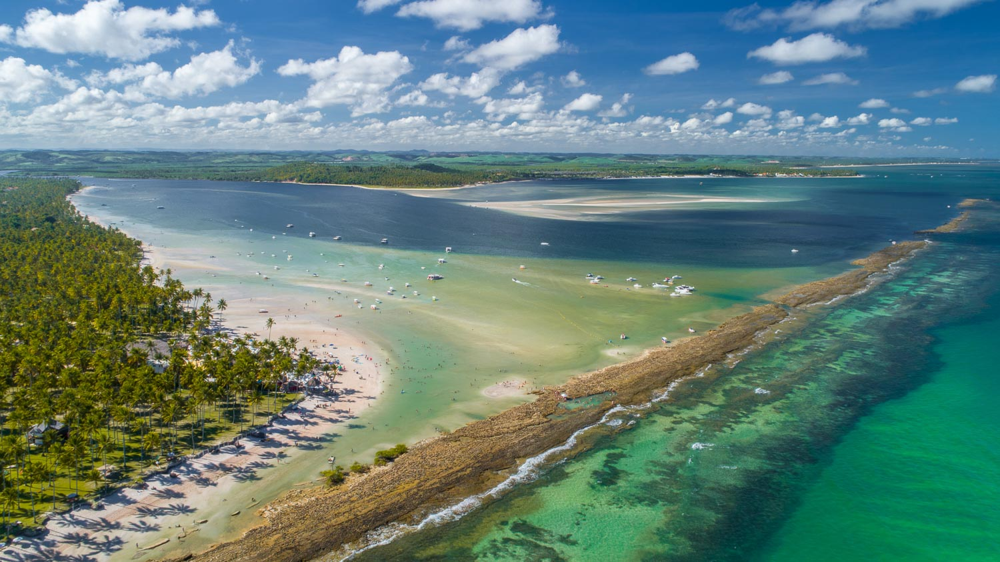
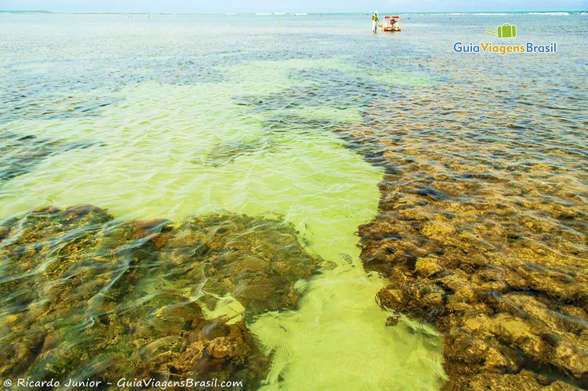
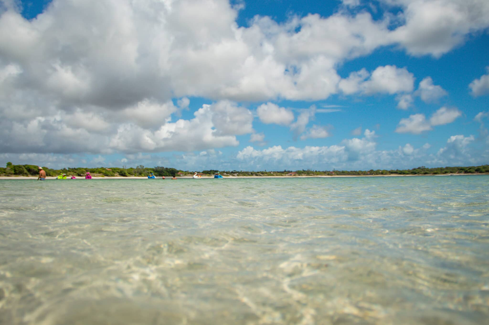
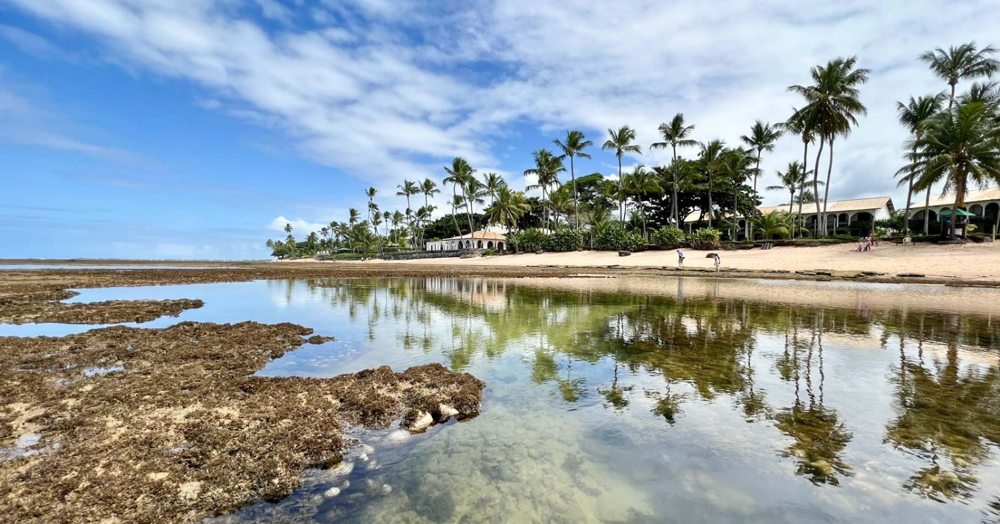
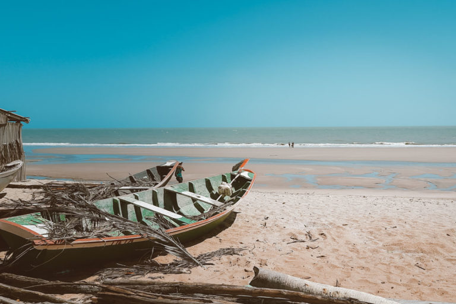

Venha conhecer o Nordeste Brasileiro Conosco.
Pernambuco
Porto de Galinhas
{kind=link}
Piscinas naturais, jangadas coloridas e um mar cristalino é o que te espera em Porto de Galinhas.
Praia dos Carneiros

{kind=link}
A praia de Carneiros é uma das praias mais bonitas de Penambuco.
Maragogi
Saindo de Pernambuco tem a praia de Maragogi que é uma das praias mais procuradas no Nordeste

Praia do Toque

o sossego é garantido na praia, ja que pra chegar na praia so de barco, mas quem se aventura é recompensado com a vista linda e aguas calmas.
Sergipe
Praia do Saco

A Praia do Saco além de ser uma das praias mais bonitas de Sergipe é também considerada uma das praias mais bonitas do planeta
Praia do Jatoba

Uma praia especial para quem deseja se sentir em contato com a natureza.
Ceara

A Praia do Saco além de ser uma das praias mais bonitas de Sergipe é também considerada uma das praias mais bonitas do planeta
Praia Paraiso

Considerado um dos refúgios da cidade,esta bela praia é conhecida por seu clima aconchegante água aconchegante. Caso goste de praticar esporte aconselho o windsurf.
Rio Grande do Norte
Dunas de Genipau

É destaque por ter imensas dunas e uma lagoa de água doces, que sao um grande atrativo turístico
Lagoa do Carcara

É considerado um dos lugares paradisíacos do RN. O acesso é complicado, mas quem se aventura não se arrepende.
Maranhão

Águas em tons azulados, esverdeados, avermelhados.O local oferece bem mais do que a lagoa para visitar: tem fervedouro, cachoeira e igarapé.

Água salgada do mar se confunde com a água doce do rio e com as dunas, formando, no entorno da praia, lagoas e até mesmo cachoeiras próximas ao mar durante a época de chuvas
Bahia
Praia do Forte

Praia do Forte é um dos melhores destinos do Litoral Norte da Bahia.Se o que você busca é um mar incrível, piscinas naturais, vida marinha abundante e um cenário pontilhado por coqueiros a perder de vista, Praia do Forte não pode ficar de fora do seu roteiro.

Escondida entre os povoados de Trancoso e Caraíva, a praia do Espelho é considerada uma das mais encantadoras do Sul da Bahia. Perfeita por natureza e bucólica por vocação, reúne águas azuis que formam piscinas naturais
Piauí
Praia do Arrombado

Uma das praias mais bonitas de Luís Correia, a praia do Barro Preto, conhecida como praia do Arrombado, é pouco visitada, ideal para prática de surf e windsurf na época dos ventos.

A praia mais bonita do litoral do Piauí é a praia do Macapá. A praia é formada entre a foz do rio Macapá e o mar aberto: de um lado, a paisagem do rio com sua vegetação própria e do outro, uma piscina natural formada entre bancos de areia.